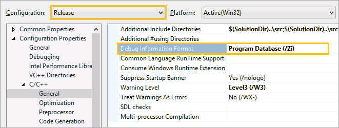
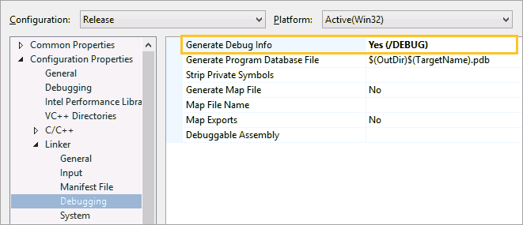
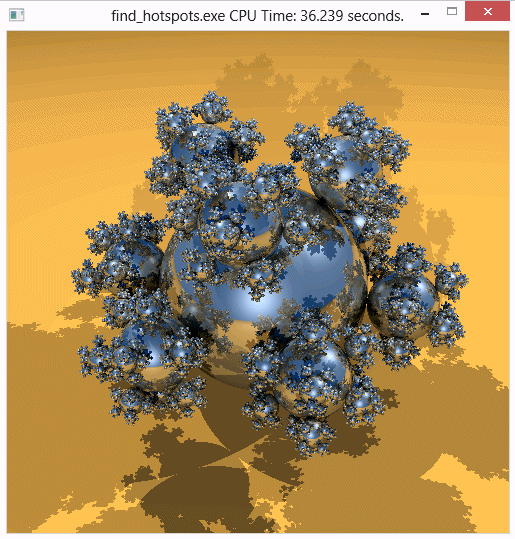

Before you start analyzing your application target for hotspots,
do the following:
Before you start analyzing your application target for hotspots,
do the following:
Note
- The steps below are provided for Microsoft Visual Studio 2013. They may slightly differ for other versions of Visual Studio.
- Steps provided by this tutorial are generic and applicable to any application. You may choose to follow the proposed workflow using your own application.
Get Software Tools
You need the following tools to try tutorial steps yourself using the tachyon sample application:
Intel® VTune™ Amplifier, including sample applications
zip file extraction utility
Supported compiler (see Release Notes for more information); optionally, Intel® C++ compiler
Acquire VTune Amplifier
If you do not already have access to the VTune Amplifier, you can download an evaluation copy from http://software.intel.com/en-us/articles/intel-software-evaluation-center/.
Install and Set Up VTune Amplifier Sample Applications
Copy the tachyon_vtune_amp_xe.zip file from the <install-dir>\samples\<locale>\C++\ directory to a writable directory or share on your system.
Note
The default installation path for the VTune Amplifier XE is [Program Files]\IntelSWTools\VTune Amplifier XE <version>. For the VTune Amplifier for Systems, the default <install_dir> is [Program Files]\IntelSWTools\system_studio_<version>\VTune Amplifier for Systems.
Extract the sample from the .zip file.
Note
Samples are non-deterministic. Your screens may vary from the screen captures shown throughout this tutorial.
Samples are designed only to illustrate the VTune Amplifier features; they do not represent best practices for creating code.
Choose a Project
Choose a project with the analysis target in the Visual Studio IDE as follows:
From the Visual Studio menu, select File > Open > Project/Solution....
The Open Project dialog box opens.
In the Open Project dialog box, browse to the location you used to extract the tachyon_vtune_amp_xe.zip file and select the tachyon_vtune_amp_xe.sln file.

The solution is added to Visual Studio IDE and shows up in the Solution Explorer.
In the Solution Explorer, right-click the find_hotspots project and select Set as StartUp Project.
find_hotspots appears in bold in the Solution Explorer.
When you choose a project in Visual Studio IDE, the VTune Amplifier automatically creates the config.amplxeproj project file and sets the find_hotspots application as an analysis target in the project properties.
Configure the Microsoft* Symbol Server
Configure the Visual Studio environment to download the debug information for system libraries so that the VTune Amplifier can properly identify system functions and classify/attribute functions.
Go to Tools > Options....
The Options dialog box opens.
From the left pane, select Debugging > Symbols.
- In the
Symbol file
(.pdb) locations field, make sure the
Microsoft Symbol Servers location is selected. Otherwise,
click the
 Add button, specify the following address:
http://msdl.microsoft.com/download/symbols, and make sure the added address is
checked.
Add button, specify the following address:
http://msdl.microsoft.com/download/symbols, and make sure the added address is
checked.
In the Cache symbols in this directory field, specify a directory where the downloaded symbol files will be stored.

Click OK.
Verify Optimal Compiler/Linker Options
Configure Visual Studio project properties to generate the debug information for your application so that the VTune Amplifier can open the source code.
Select the find_hotspots project and go to Project > Properties.
From the find_hotspots Property Pages dialog box, select Configuration Properties > General and make sure the selected Configuration (top of the dialog) is Release.
From the find_hotspots Property Pages dialog box, select C/C++ > General pane and specify the Debug Information Format as Program Database (/Zi).

From the find_hotspots Property Pages dialog box, select Linker > Debugging and set the Generate Debug Info option to Yes (/DEBUG).

Click OK.
Build the Target in the Release Mode
Build the target in the Release mode with full optimizations, which is recommended for performance analysis.
Go to the Build > Configuration Manager... dialog box and select the Release mode for your target project.
From the Visual Studio menu, select Build > Build find_hotspots.
The find_hotspots.exe application is built.
Note
The build configuration for tachyon may initially be set to Debug, which is typically used for development. When analyzing performance issues with the VTune Amplifier, you are recommended to use the Release build with normal optimizations. In this way, the VTune Amplifier is able to analyze the realistic performance of your application.
Create a Performance Baseline
From the Visual Studio menu, select Debug > Start Without Debugging.
The find_hotspots.exe application starts running.
Note
Before you start the application, minimize the amount of other software running on your computer to get more accurate results.

Note the execution time displayed in the window caption. For the find_hotspots.exe executable in the figure above, the execution time is 36.239 seconds. The total execution time is the baseline against which you will compare subsequent runs of the application.
Note
Run the application several times, note the execution time for each run, and use the average number. This helps to minimize skewed results due to transient system activity.
Launch the VTune Amplifier from Microsoft Visual Studio
To run an analysis from the Visual Studio IDE, click the New Analysis button on the VTune Amplifier toolbar. The VTune Amplifier uses your current project as the target application and the tachyon directory as the working directory where the analysis results will be stored.
Next Step
Optimization Notice |
|---|
Intel's compilers may or may not optimize to the same degree for non-Intel microprocessors for optimizations that are not unique to Intel microprocessors. These optimizations include SSE2, SSE3, and SSSE3 instruction sets and other optimizations. Intel does not guarantee the availability, functionality, or effectiveness of any optimization on microprocessors not manufactured by Intel. Microprocessor-dependent optimizations in this product are intended for use with Intel microprocessors. Certain optimizations not specific to Intel microarchitecture are reserved for Intel microprocessors. Please refer to the applicable product User and Reference Guides for more information regarding the specific instruction sets covered by this notice. Notice revision #20110804 |